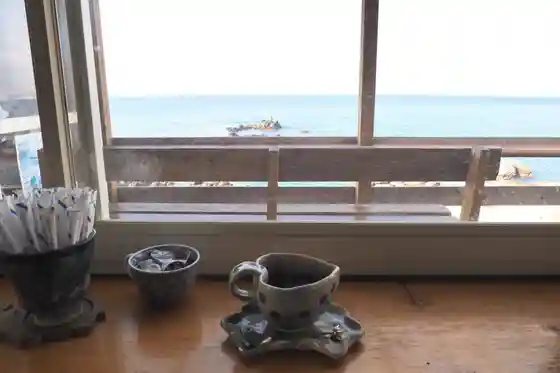
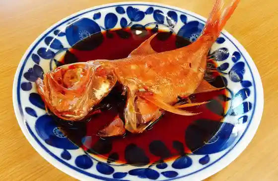
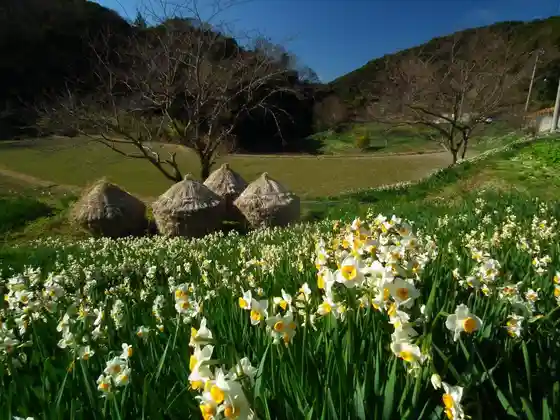

Nokogiriyama Nippon Tera (Jigoku no Zoki)
Kyonan, Chiba · 0470-55-1103 · Official / source link
Ongaku to Kohii no Mise Misaki
Kyonan, Chiba · 0439-69-2109 · Official / source link

Banya Honkan
Kyonan, Chiba · 0470-55-4844 · Official / source link

Miyako City Koryu Shisetsu Roadside Station Yasuda Shogakko
Kyonan, Chiba · 0470-29-5530 · Official / source link
Kogetsu Suisen Rodo
Kyonan, Chiba · 0470-55-1683 · Official / source link

Sakuma Damu Park
Kyonan, Chiba · 0470-55-1560 · Official / source link
Yasuda Beach
Kyonan, Chiba · 0470-55-1560 · Official / source link
Warai Raku Baths
Kyonan, Chiba · 0470-55-8830 · Official / source link
Moto Mei Beach
Kyonan, Chiba · 0470-55-1560 · Official / source link
Roadside Station
Kyonan, Chiba · 0470-55-4518 · Official / source link
Wokuzure Suisen Sato
Kyonan, Chiba · 0470-55-8040 · Official / source link
Miyako City Koryu Shisetsu Roadside Station Yasuda Sho Fuzoku Yochien
Kyonan, Chiba · 0470-50-1238 · Official / source link
Hishikawa Moronobu Memorial Museum
Kyonan, Chiba · 0470-55-4061 · Official / source link
BOTANICAL POOL CLUB
Kyonan, Chiba · 0470-29-3425 · Official / source link
Dai Roku Beach
Kyonan, Chiba · 0470-55-1560 · Official / source link
Minamotonoyoritomo Joriku Chi
Kyonan, Chiba · 0470-55-4061 · Official / source link
Katsuyama Beach
Kyonan, Chiba · 0470-55-1560 · Official / source link
Kisugaura Coast (Kisugaura Beach)
Kyonan, Chiba · 0470-55-1560 · Official / source link
BASE1901
Kyonan, Chiba · 090-8031-8132 · Official / source link